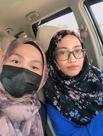
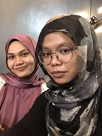

MY FRIENDS
🌼 NUR SYAHIDAH 🌼

- Full name: Nur Syahidah Muhd Rusli
- Birth date: 10 March 2000
- Gender: Female
- Status: in relationship
- Rate: 🧡 🧡 🧡 🧡 🧡
So this is my bestfriend since we were thirteen. Syahidah is a good friend. We always share a lot of things together in different moments and different thoughts. I'm the type who always rely on her. Many things happened to me and she volunteered to lean her ears to know what I am concerned about. The important moment with her in my life is when she when to my house after I told her my father passed away. I was totally lost at that time. She always been there beside me. I really appreciate her as my bestfriend. Not to tell her character is quite annoying sometimes. She's the type who always slow pick up in conversation and thinking. I need to clearly tell her from one point to another point. Sometimes my anger is on the limit because of her but I know she trying to understand about this and that. Until now, we still contact with each other. Every single day. My bestie is my comfort zone.
🌻 NOOR FARAHEEN 🌻

- Full name: Noor Faraheen Abdul Aris
- Birth date: 4 January 2000
- Gender: Female
- Status: in relationship
- Rate:🧡 🧡 🧡 🧡 🧡
Noor Faraheen, always my sister. I think she is more matured than me. She knows how to handle problem and so on. Luckily I have her as my bestfriend. We have a lot of things in commons. But sometimes our thoughts are not equal. Then we slowly solved the problem and getting better. She is the first friend I made in highschool because she was my dorm mate. We have been through together. Laugh and cry moments. I'm realized how time flies by so fast. Everything has changed in my life. But still I'm a cry baby. Farah and Syahidah always comfort me when I getting sad. Only God knows how much I love both of them. Many things I have learned from her. Including social life, family matters, and more. I'm pretty sure we will still together as friend until we are old.